Code
library(tidyverse)
library(sf)
library(patchwork)library(tidyverse)
library(sf)
library(patchwork)# Column rename map (OEP camelCase → snake_case)
geo_renames <- c(
mesa_code = "CodigoMesa",
mesa_number = "NumeroMesa",
registered = "InscritosHabilitados",
country_code = "CodigoPais",
country_name = "NombrePais",
dept_code = "CodigoDepartamento",
dept_name = "NombreDepartamento",
prov_code = "CodigoProvincia",
prov_name = "NombreProvincia",
mun_code = "CodigoSeccion",
mun_name = "NombreMunicipio",
localidad_code = "CodigoLocalidad",
localidad_name = "NombreLocalidad",
recinto_code = "CodigoRecinto",
recinto_name = "NombreRecinto"
)
vote_renames <- c(
valid_votes = "VotoValido",
blank_votes = "VotoBlanco",
null_votes = "TotalVotoNulo",
votes_cast = "VotoEmitido"
)
# --- First round (all three races) -------------------------------------------
raw_1v <- read_csv(
"data-raw/EG2025_20250824_235619_5976286028509320003.csv",
show_col_types = FALSE
) |>
filter(NombrePais == "BOLIVIA")
# Ballot slot → party mapping (confirmed against OEP separata)
party_renames_1v <- c(
AP = "Voto1",
LyP_ADN = "Voto2",
APB_SUMATE = "Voto3",
LIBRE = "Voto5",
FP = "Voto6",
MAS_IPSP = "Voto7",
UNIDAD = "Voto9",
PDC = "Voto10"
)
elections_1v <- raw_1v |>
rename(!!!party_renames_1v) |>
rename(race = Descripcion) |>
rename(!!!geo_renames) |>
rename(!!!vote_renames)
parties_main <- c("AP", "LyP_ADN", "APB_SUMATE", "LIBRE", "FP", "MAS_IPSP", "UNIDAD", "PDC")
parties_especial <- c(parties_main, "Voto11", "Voto12")
# --- Second round (presidential only) ----------------------------------------
raw_2v <- read_csv(
"data-raw/EG2025_2v_20251026_235911_6311285959951043675.csv",
show_col_types = FALSE
) |>
filter(NombrePais == "BOLIVIA")
elections_2v <- raw_2v |>
rename(!!!geo_renames) |>
rename(!!!vote_renames)
parties_2v <- c("PDC", "LIBRE")muni_lookup <- readRDS("data/muni_id_lookup_table.rds")
prov_lookup <- readRDS("data/prov_id_lookup_table.rds")
gadm1 <- st_read("data/gadm41_BOL_3.gpkg", layer = "ADM_ADM_1", quiet = TRUE) |>
select(NAME_1, geom)
gadm2 <- st_read("data/gadm41_BOL_3.gpkg", layer = "ADM_ADM_2", quiet = TRUE) |>
select(NAME_1, NAME_2, geom)
gadm3 <- st_read("data/gadm41_BOL_3.gpkg", layer = "ADM_ADM_3", quiet = TRUE) |>
select(NAME_1, NAME_2, NAME_3, geom)OEP geographic codes map directly to INE codes: id_prov = sprintf("%02d%02d", dept, prov) and id_muni = sprintf("%02d%02d%02d", dept, prov, seccion). We use the pre-built lookup tables (prov_id_lookup_table, muni_id_lookup_table) to get the GADM name variants for spatial joins. TIOC/AIOC indigenous autonomies created after the GADM vintage will not match.
dept_to_gadm <- tibble(
dept_code = 1:9,
dept_gadm = c("Chuquisaca", "La Paz", "Cochabamba", "Oruro", "Potosí",
"Tarija", "Santa Cruz", "Beni", "Pando")
)
prov_to_gadm <- prov_lookup |>
select(id_prov, province_gadm) |>
mutate(dept_code = as.integer(substr(id_prov, 1, 2)),
prov_code = as.integer(substr(id_prov, 3, 4))) |>
left_join(dept_to_gadm, by = "dept_code")
muni_to_gadm <- muni_lookup |>
select(id_muni, muni_gadm, department) |>
mutate(dept_code = as.integer(substr(id_muni, 1, 2)),
prov_code = as.integer(substr(id_muni, 3, 4)),
mun_code = as.integer(substr(id_muni, 5, 6))) |>
left_join(dept_to_gadm, by = "dept_code")
cat("Province lookup:", nrow(prov_to_gadm), "rows,",
sum(is.na(prov_to_gadm$province_gadm)), "missing GADM name\n")Province lookup: 112 rows, 0 missing GADM namecat("Municipality lookup:", nrow(muni_to_gadm), "rows,",
sum(is.na(muni_to_gadm$muni_gadm)), "missing GADM name\n")Municipality lookup: 341 rows, 2 missing GADM nameaggregate_results <- function(data, ..., parties) {
data |>
group_by(...) |>
summarise(
mesas = n(),
registered = sum(registered),
votes_cast = sum(votes_cast),
valid_votes = sum(valid_votes),
null_votes = sum(null_votes),
blank_votes = sum(blank_votes),
across(all_of(parties), sum),
.groups = "drop"
) |>
mutate(
turnout_pct = votes_cast / registered * 100,
null_pct = null_votes / votes_cast * 100,
across(all_of(parties), ~ . / valid_votes * 100, .names = "{.col}_pct")
)
}pres_1v <- elections_1v |> filter(race == "PRESIDENTE")
pres_dept <- aggregate_results(pres_1v, dept_code, dept_name,
parties = parties_main)
pres_dept |>
select(dept_name, mesas, registered, turnout_pct, null_pct,
all_of(paste0(parties_main, "_pct"))) |>
mutate(across(where(is.numeric), ~ round(., 1))) |>
arrange(desc(registered))# A tibble: 9 × 13
dept_name mesas registered turnout_pct null_pct AP_pct LyP_ADN_pct
<chr> <dbl> <dbl> <dbl> <dbl> <dbl> <dbl>
1 Santa Cruz 9115 2071967 87.7 13.5 5.3 0.9
2 La Paz 9099 2047825 91.2 18 9.1 1.9
3 Cochabamba 6346 1443013 89 33.3 12.6 1.5
4 Potosí 2377 487029 90.1 25 10.9 2
5 Tarija 1814 394539 86.7 12.7 8.3 1.5
6 Chuquisaca 1815 384825 86.8 19.3 8.4 1.5
7 Oruro 1693 363225 91.1 18.4 8 2.1
8 Beni 1373 296173 84.7 11.1 6.3 0.9
9 Pando 394 78611 83.6 13.8 8.8 1.1
# ℹ 6 more variables: APB_SUMATE_pct <dbl>, LIBRE_pct <dbl>, FP_pct <dbl>,
# MAS_IPSP_pct <dbl>, UNIDAD_pct <dbl>, PDC_pct <dbl>pres_prov <- aggregate_results(
pres_1v,
dept_code, dept_name,
prov_code, prov_name,
parties = parties_main
)
pres_prov |>
select(dept_name, prov_name, valid_votes,
all_of(paste0(parties_main, "_pct"))) |>
mutate(across(where(is.numeric), ~ round(., 1))) |>
arrange(dept_name, desc(valid_votes)) |>
head(20)# A tibble: 20 × 11
dept_name prov_name valid_votes AP_pct LyP_ADN_pct APB_SUMATE_pct LIBRE_pct
<chr> <chr> <dbl> <dbl> <dbl> <dbl> <dbl>
1 Beni Cercado 73432 4.1 0.8 10.8 27.4
2 Beni Vaca Diez 70120 5.2 0.9 16.4 21.4
3 Beni General J… 34688 8.5 1.2 6.8 21.4
4 Beni Iténez 8995 10.5 0.7 4.3 39.5
5 Beni Yacuma 8253 7.7 0.7 5.1 27
6 Beni Moxos 7649 17.3 1.4 6.9 19.5
7 Beni Marbán 6321 13.3 1.6 7.9 18.9
8 Beni Mamoré 4894 4.2 0.7 3.8 23.3
9 Chuquisaca Oropeza 185746 5.2 1.2 5.4 36.4
10 Chuquisaca Nor Cinti 15631 19.4 2.6 5.8 11.6
11 Chuquisaca Hernando … 13524 8.4 1.9 6.1 26.3
12 Chuquisaca Tomina 8846 18.2 2.2 10.3 13.5
13 Chuquisaca Luis Calvo 7538 12.8 1.6 7.3 25.9
14 Chuquisaca Sud Cinti 6336 20.9 2.9 7.4 12.7
15 Chuquisaca Zudáñez 5881 28.1 2.6 3.8 9.6
16 Chuquisaca Yamparáez 4378 19.3 2.5 4.8 9.5
17 Chuquisaca Azurduy 4139 17.2 3 6.2 12.5
18 Chuquisaca Belisario… 3752 13.3 2.1 7.7 13.2
19 Cochabamba Cercado 394814 7.9 1.3 17.4 35.2
20 Cochabamba Quillacol… 202038 10.8 1.6 16 25.7
# ℹ 4 more variables: FP_pct <dbl>, MAS_IPSP_pct <dbl>, UNIDAD_pct <dbl>,
# PDC_pct <dbl>pres_mun <- aggregate_results(
pres_1v,
dept_code, dept_name,
prov_code, prov_name,
mun_code, mun_name,
parties = parties_main
)
pres_mun |>
select(dept_name, mun_name, valid_votes,
all_of(paste0(parties_main, "_pct"))) |>
mutate(across(where(is.numeric), ~ round(., 1))) |>
arrange(desc(valid_votes)) |>
head(20)# A tibble: 20 × 11
dept_name mun_name valid_votes AP_pct LyP_ADN_pct APB_SUMATE_pct LIBRE_pct
<chr> <chr> <dbl> <dbl> <dbl> <dbl> <dbl>
1 Santa Cruz Santa Cru… 908038 4 0.7 4.7 43.5
2 La Paz El Alto 570493 7.5 2.2 2.8 10.9
3 La Paz Nuestra S… 537444 5.3 1.6 3.6 28.2
4 Cochabamba Cochabamba 394814 7.9 1.3 17.4 35.2
5 Oruro Oruro 189564 5.5 2 5.5 29.8
6 Chuquisaca Sucre 180602 4.6 1.2 5.4 37.1
7 Tarija Tarija 142837 5.5 1.5 5.2 23.5
8 Potosí Potosí 136291 4.4 1.5 5.4 35.6
9 Cochabamba Sacaba 102104 12.9 1.6 14.7 28.2
10 Cochabamba Quillacol… 86823 10.1 1.5 16.6 25.3
11 Santa Cruz Warnes 77703 6.2 1 5.5 28.4
12 Beni Trinidad 71488 3.8 0.7 10.8 27.6
13 Santa Cruz La Guardia 68931 6.4 1.1 4.9 31.1
14 Santa Cruz Montero 63139 5.7 1 4.9 26.4
15 Beni Riberalta 49465 5.5 1.1 20.4 18.2
16 Tarija Yacuiba 48546 10.7 1.4 5.8 21.9
17 La Paz Viacha 47532 9.6 2.2 2.9 7.1
18 Santa Cruz Cotoca 41953 5.7 0.8 4.9 27.7
19 Cochabamba Colcapirh… 35658 7.7 1.3 17.4 32.6
20 Cochabamba Tiquipaya 33604 10.5 1.5 17.4 32
# ℹ 4 more variables: FP_pct <dbl>, MAS_IPSP_pct <dbl>, UNIDAD_pct <dbl>,
# PDC_pct <dbl># --- Choropleth helpers -------------------------------------------------------
party_colors <- c(
AP = "#3B8CC4", LyP_ADN = "#1A1A1A", APB_SUMATE = "#6B2D8B",
LIBRE = "#D42E2E", FP = "#A8DCF0", MAS_IPSP = "#1B3D8F",
UNIDAD = "#E8A838", PDC = "#2E7D7B",
Voto11 = "#7B5B3A", Voto12 = "#5A7B3A"
)
party_labels <- c(
AP = "AP", LyP_ADN = "LyP ADN", APB_SUMATE = "APB Súmate",
LIBRE = "LIBRE", FP = "FP", MAS_IPSP = "MAS-IPSP",
UNIDAD = "UNIDAD", PDC = "PDC",
Voto11 = "Voto 11", Voto12 = "Voto 12"
)
make_choropleth <- function(geo_sf, data, join_cols, pct_col, title,
fill_color = "#2E7D7B") {
df_joined <- geo_sf |>
left_join(data, by = join_cols)
ggplot(df_joined) +
geom_sf(aes(fill = .data[[pct_col]]), color = "white", linewidth = 0.15) +
scale_fill_gradient(low = "white", high = fill_color,
name = "% vote share", na.value = "grey85",
limits = c(0, NA)) +
labs(title = title) +
theme_void(base_size = 9) +
theme(legend.position = "bottom",
legend.key.width = unit(1.2, "cm"),
plot.title = element_text(face = "bold", size = 10))
}
choropleth_panel <- function(agg_dept, agg_prov, agg_mun,
parties,
race_label = "Presidential") {
dept_joined <- agg_dept |>
left_join(dept_to_gadm, by = "dept_code")
prov_joined <- agg_prov |>
left_join(prov_to_gadm, by = c("dept_code", "prov_code"))
mun_joined <- agg_mun |>
left_join(muni_to_gadm, by = c("dept_code", "prov_code", "mun_code"))
plots <- list()
for (party in parties) {
pct <- paste0(party, "_pct")
color <- party_colors[[party]] %||% "#555555"
label <- party_labels[[party]] %||% party
# Shared scale: 0 to max across all three geographic levels
pct_max <- max(
c(dept_joined[[pct]], prov_joined[[pct]], mun_joined[[pct]]),
na.rm = TRUE
)
shared_limits <- c(0, pct_max)
p_dept <- make_choropleth(
gadm1, dept_joined,
c("NAME_1" = "dept_gadm"),
pct, paste0(label, " — Department"), color
) + scale_fill_gradient(low = "white", high = color, name = "%",
na.value = "grey85", limits = shared_limits)
p_prov <- make_choropleth(
gadm2, prov_joined,
c("NAME_1" = "dept_gadm", "NAME_2" = "province_gadm"),
pct, paste0(label, " — Province"), color
) + scale_fill_gradient(low = "white", high = color, name = "%",
na.value = "grey85", limits = shared_limits)
p_mun <- make_choropleth(
gadm3, mun_joined,
c("NAME_1" = "dept_gadm", "NAME_3" = "muni_gadm"),
pct, paste0(label, " — Municipality"), color
) + scale_fill_gradient(low = "white", high = color, name = "%",
na.value = "grey85", limits = shared_limits)
plots[[party]] <- p_dept + p_prov + p_mun +
plot_layout(ncol = 3, widths = c(1, 1, 1))
}
wrap_plots(plots, ncol = 1) +
plot_annotation(title = paste(race_label, "vote share by party"),
theme = theme(plot.title = element_text(face = "bold", size = 14)))
}
choropleth_panel(pres_dept, pres_prov, pres_mun,
parties_main, "Presidential (first round)")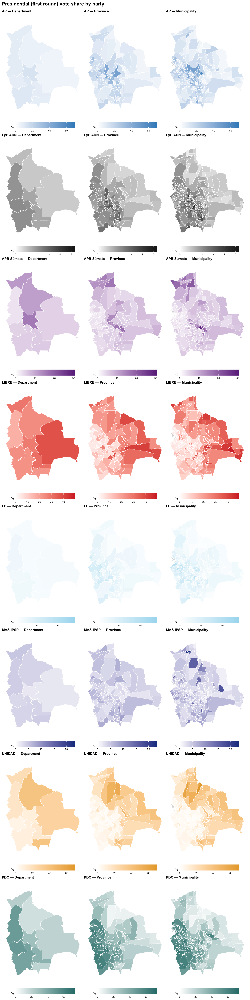
uni <- elections_1v |> filter(race == "DIPUTADO CIRCUNSCRIPCIÓN UNINOMINAL")
uni_dept <- aggregate_results(uni, dept_code, dept_name,
parties = parties_main)
uni_dept |>
select(dept_name, mesas, registered, turnout_pct, null_pct,
all_of(paste0(parties_main, "_pct"))) |>
mutate(across(where(is.numeric), ~ round(., 1))) |>
arrange(desc(registered))# A tibble: 9 × 13
dept_name mesas registered turnout_pct null_pct AP_pct LyP_ADN_pct
<chr> <dbl> <dbl> <dbl> <dbl> <dbl> <dbl>
1 La Paz 8975 2028188 91.2 17.7 8.1 2
2 Santa Cruz 8866 2027462 87.6 12 4.4 2.3
3 Cochabamba 6326 1440069 89 32.4 11.9 1.6
4 Potosí 2377 487029 90.1 23.2 10.8 2.8
5 Tarija 1770 388244 86.8 11.3 8.6 1.7
6 Chuquisaca 1815 384825 86.8 17.6 8.7 1.7
7 Oruro 1685 362051 91.1 18.4 8.3 1.7
8 Beni 1268 280179 84.5 9 6.3 1.2
9 Pando 361 74289 83.4 12.1 9.3 1.8
# ℹ 6 more variables: APB_SUMATE_pct <dbl>, LIBRE_pct <dbl>, FP_pct <dbl>,
# MAS_IPSP_pct <dbl>, UNIDAD_pct <dbl>, PDC_pct <dbl>uni_prov <- aggregate_results(
uni,
dept_code, dept_name,
prov_code, prov_name,
parties = parties_main
)uni_mun <- aggregate_results(
uni,
dept_code, dept_name,
prov_code, prov_name,
mun_code, mun_name,
parties = parties_main
)
uni_mun |>
select(dept_name, mun_name, valid_votes,
all_of(paste0(parties_main, "_pct"))) |>
mutate(across(where(is.numeric), ~ round(., 1))) |>
arrange(desc(valid_votes)) |>
head(20)# A tibble: 20 × 11
dept_name mun_name valid_votes AP_pct LyP_ADN_pct APB_SUMATE_pct LIBRE_pct
<chr> <chr> <dbl> <dbl> <dbl> <dbl> <dbl>
1 Santa Cruz Santa Cru… 807050 3.6 1.9 4.8 42.6
2 La Paz Nuestra S… 473814 5.5 2 6.3 24.2
3 La Paz El Alto 461351 6.5 2.4 6.2 12.8
4 Cochabamba Cochabamba 352780 7.7 1.3 20.2 29.5
5 Oruro Oruro 161467 5 1.7 8.5 24.6
6 Chuquisaca Sucre 154156 5.4 1.3 10.3 31.5
7 Tarija Tarija 122067 5.3 2.4 7.6 29.6
8 Potosí Potosí 113933 2.3 2 5.4 32.2
9 Cochabamba Sacaba 89675 12.6 1.5 18.4 24.1
10 Cochabamba Quillacol… 73254 11.7 1.7 22.2 24.1
11 Santa Cruz Warnes 66088 5.3 3.5 7.7 35.3
12 Beni Trinidad 61067 6.3 0.6 12.6 34.2
13 Santa Cruz La Guardia 59746 6.5 8.7 5.6 29.9
14 Santa Cruz Montero 55048 5.1 0.9 4.7 28.7
15 Tarija Yacuiba 40584 10.6 0.9 5.7 26.2
16 Beni Riberalta 38825 6.2 3.2 18.3 21
17 La Paz Viacha 38363 6.1 1.7 4.5 15
18 Santa Cruz Cotoca 35809 6.4 2.1 5.1 27.3
19 Cochabamba Colcapirh… 31734 8.2 1.3 22.1 28.4
20 Cochabamba Tiquipaya 29062 11.7 1.5 23.4 29.7
# ℹ 4 more variables: FP_pct <dbl>, MAS_IPSP_pct <dbl>, UNIDAD_pct <dbl>,
# PDC_pct <dbl>choropleth_panel(uni_dept, uni_prov, uni_mun,
parties_main, "Diputado Uninominal")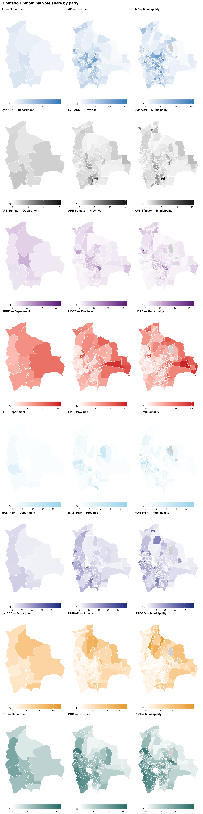
The 7 indigenous circunscripciones especiales cover specific regions. Voto11 and Voto12 are additional parties that only contest this race.
esp <- elections_1v |> filter(race == "DIPUTADO CIRCUNSCRIPCIÓN ESPECIAL")
esp_dept <- aggregate_results(esp, dept_code, dept_name,
parties = parties_especial)
esp_dept |>
select(dept_name, mesas, valid_votes,
all_of(paste0(parties_especial, "_pct"))) |>
mutate(across(where(is.numeric), ~ round(., 1))) |>
arrange(desc(valid_votes))# A tibble: 7 × 13
dept_name mesas valid_votes AP_pct LyP_ADN_pct APB_SUMATE_pct LIBRE_pct FP_pct
<chr> <dbl> <dbl> <dbl> <dbl> <dbl> <dbl> <dbl>
1 Santa Cr… 249 20109 12.7 1.5 3.4 25 4.6
2 La Paz 124 9222 13.1 1.3 14.1 6.4 1.3
3 Beni 105 5932 25.5 2 5.3 29.4 1.5
4 Tarija 44 3171 14.8 1.1 1.6 16.9 0.7
5 Pando 33 1683 21.9 2.3 0 15.9 9.2
6 Cochabam… 20 1075 21.1 2.3 0 8.9 1.1
7 Oruro 8 642 45 1.9 0 0 29.1
# ℹ 5 more variables: MAS_IPSP_pct <dbl>, UNIDAD_pct <dbl>, PDC_pct <dbl>,
# Voto11_pct <dbl>, Voto12_pct <dbl>esp_prov <- aggregate_results(
esp,
dept_code, dept_name,
prov_code, prov_name,
parties = parties_especial
)esp_mun <- aggregate_results(
esp,
dept_code, dept_name,
prov_code, prov_name,
mun_code, mun_name,
parties = parties_especial
)The especial race only covers municipalities within the 7 indigenous circunscripciones — most of the country will appear grey.
choropleth_panel(esp_dept, esp_prov, esp_mun,
parties_especial, "Diputado Circunscripción Especial")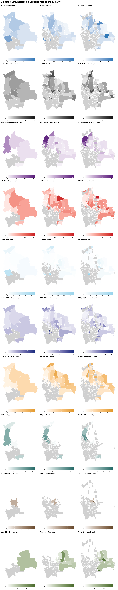
The null vote rate was remarkably high nationally (19.9%), driven by Cochabamba (33.3%). These maps show the geographic pattern.
nulo_dept <- pres_dept |>
left_join(dept_to_gadm, by = "dept_code")
nulo_prov <- pres_prov |>
left_join(prov_to_gadm, by = c("dept_code", "prov_code"))
nulo_mun <- pres_mun |>
left_join(muni_to_gadm, by = c("dept_code", "prov_code", "mun_code"))
p_nulo_dept <- make_choropleth(
gadm1, nulo_dept,
c("NAME_1" = "dept_gadm"),
"null_pct", "Null vote % — Department", "#8B0000"
) + scale_fill_gradient(low = "white", high = "#8B0000", name = "%",
na.value = "grey85")
p_nulo_prov <- make_choropleth(
gadm2, nulo_prov,
c("NAME_1" = "dept_gadm", "NAME_2" = "province_gadm"),
"null_pct", "Null vote % — Province", "#8B0000"
) + scale_fill_gradient(low = "white", high = "#8B0000", name = "%",
na.value = "grey85")
p_nulo_mun <- make_choropleth(
gadm3, nulo_mun,
c("NAME_1" = "dept_gadm", "NAME_3" = "muni_gadm"),
"null_pct", "Null vote % — Municipality", "#8B0000"
) + scale_fill_gradient(low = "white", high = "#8B0000", name = "%",
na.value = "grey85")
p_nulo_dept + p_nulo_prov + p_nulo_mun +
plot_layout(ncol = 3) +
plot_annotation(title = "Presidential null vote rate (first round)",
theme = theme(plot.title = element_text(face = "bold", size = 14)))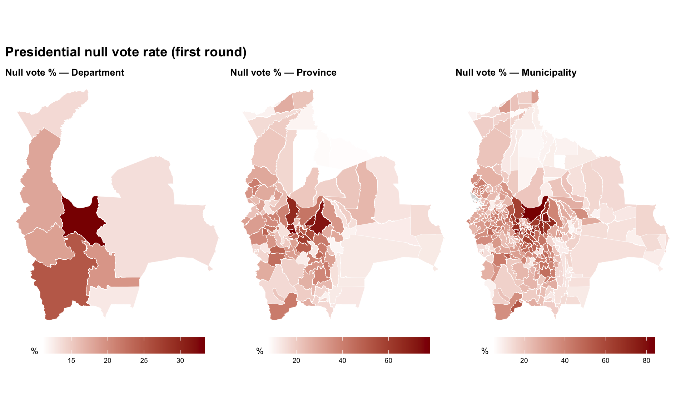
# Name mapping: display name → OEP election data name
top30_display <- c(
"Santa Cruz de la Sierra", "El Alto", "La Paz", "Cochabamba",
"Oruro", "Sucre", "Tarija", "Sacaba", "Potosí", "Quillacollo",
"Warnes", "La Guardia", "Trinidad", "Montero", "Viacha", "Riberalta",
"Cotoca", "Yacuiba", "Villa Tunari", "San Ignacio de Velasco",
"Colcapirhua", "Puerto Villarroel", "Tiquipaya", "Caranavi",
"Yapacaní", "Vinto", "Sipesipe", "El Torno", "Cobija", "Pailón"
)
oep_name_map <- c(
"Santa Cruz de la Sierra" = "Santa Cruz de La Sierra",
"La Paz" = "Nuestra Señora de La Paz",
"San Ignacio de Velasco" = "San Ignacio"
)
top30_oep <- ifelse(top30_display %in% names(oep_name_map),
oep_name_map[top30_display],
top30_display)
top30_dept <- pres_mun |>
filter(mun_name %in% top30_oep) |>
# Disambiguate San Ignacio: de Velasco is in Santa Cruz (dept 7)
filter(!(mun_name == "San Ignacio" & dept_code == 8)) |>
select(dept_code, dept_name, mun_name) |>
mutate(display_name = names(oep_name_map)[match(mun_name, oep_name_map)],
display_name = coalesce(display_name, mun_name))
top30_ordered <- top30_dept |>
mutate(orig_pos = match(display_name, top30_display)) |>
arrange(dept_code, orig_pos)
group1_names <- top30_ordered$mun_name[1:15]
group2_names <- top30_ordered$mun_name[16:30]
group1_display <- top30_ordered$display_name[1:15]
group2_display <- top30_ordered$display_name[16:30]
group1_depts <- top30_ordered$dept_name[1:15]
group2_depts <- top30_ordered$dept_name[16:30]
pres_top30 <- pres_mun |>
filter(mun_name %in% top30_oep) |>
filter(!(mun_name == "San Ignacio" & dept_code == 8))
cat_colors <- c(
setNames(party_colors[parties_main], party_labels[parties_main]),
"Blank" = "grey70", "Null" = "grey40"
)
make_top30_chart <- function(data, oep_names, display_names, dept_names,
parties, subtitle) {
df <- data |>
filter(mun_name %in% oep_names) |>
pivot_longer(cols = c(all_of(parties), null_votes, blank_votes),
names_to = "category", values_to = "votes") |>
mutate(pct = votes / votes_cast * 100) |>
mutate(
category = recode(category, !!!party_labels,
null_votes = "Null", blank_votes = "Blank"),
category = factor(category,
levels = c(rev(party_labels[parties]), "Blank", "Null")),
display_name = names(oep_name_map)[match(mun_name, oep_name_map)],
display_name = coalesce(display_name, mun_name)
)
label_lookup <- setNames(
paste0(display_names, " (", dept_names, ")"),
display_names
)
df <- df |>
mutate(display_label = label_lookup[display_name],
display_label = factor(display_label, levels = rev(label_lookup)))
ggplot(df, aes(x = pct, y = display_label, fill = category)) +
geom_col(position = "stack", width = 0.75) +
scale_fill_manual(values = cat_colors, name = NULL) +
scale_x_continuous(labels = \(x) paste0(x, "%")) +
labs(x = "% of votes cast", y = NULL, subtitle = subtitle) +
theme_minimal(base_size = 11) +
theme(legend.position = "right")
}make_top30_chart(pres_top30, group1_names, group1_display, group1_depts,
parties_main, "Municipalities 1–15 (sorted by department)")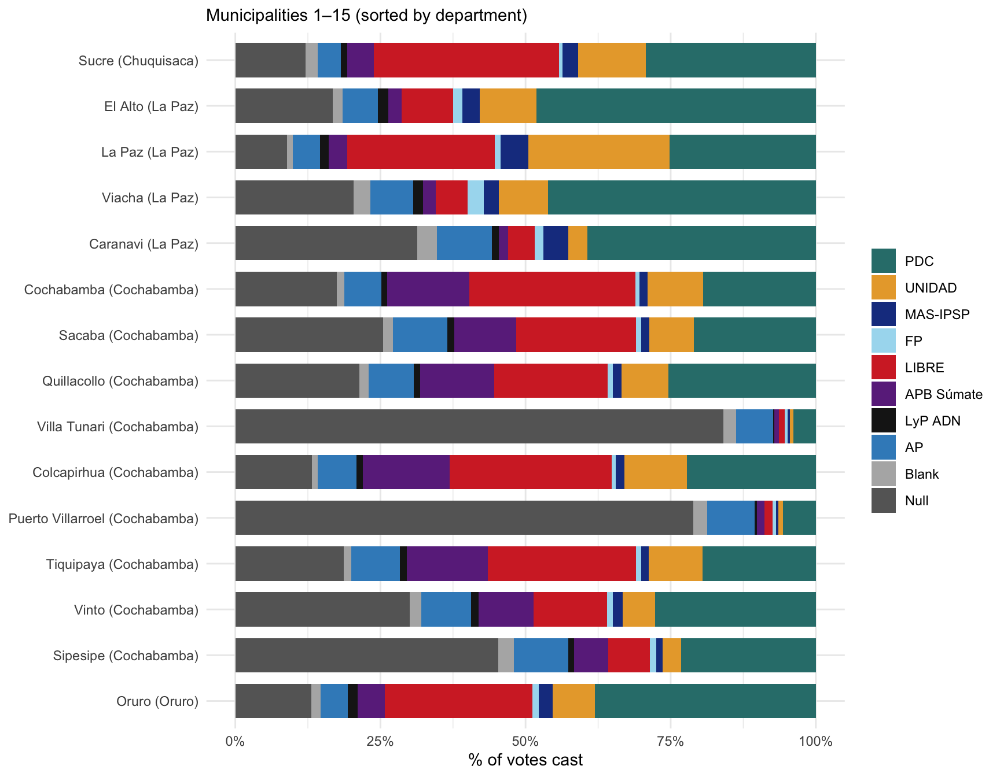
make_top30_chart(pres_top30, group2_names, group2_display, group2_depts,
parties_main, "Municipalities 16–30 (sorted by department)")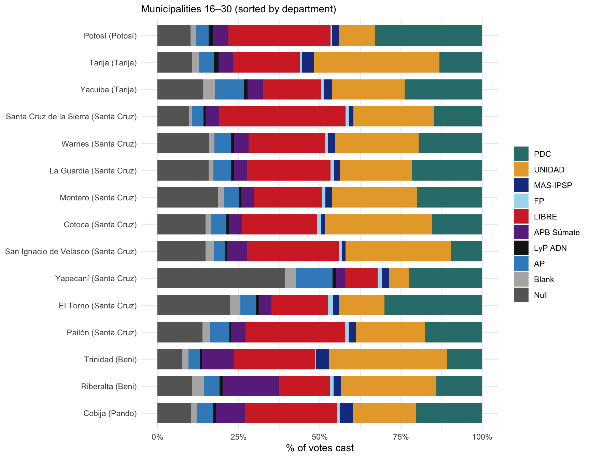
Municipalities are classified A through I based on their CEL (Condición Étnico-Lingüística) profile from the 2024 census, following Albó & Romero’s framework as implemented in albo-restudy-2024.qmd. Category A represents the most strongly indigenous-language municipalities; category I the least.
cel_geo <- readRDS("../bolivia-data/Censo 2024/base_datos_csv_2024/cel_geo.rds")
albo_groups <- cel_geo |>
filter(!is.na(municipality), is.na(urban_rural)) |>
select(department, province, municipality, cel_2plus, cel_4plus, cel_5plus) |>
mutate(
albo_group = case_when(
cel_5plus >= 90 & cel_4plus >= 90 & cel_2plus >= 90 ~ "A",
cel_5plus > 67 & cel_4plus > 80 & cel_2plus > 90 ~ "B",
cel_5plus > 50 & cel_4plus > 67 & cel_2plus > 67 ~ "C",
cel_5plus > 33 & cel_4plus > 50 & cel_2plus > 67 ~ "D",
cel_2plus > 75 ~ "E",
cel_2plus > 50 ~ "F",
cel_2plus > 33 ~ "G",
cel_2plus > 10 ~ "H",
TRUE ~ "I"
)
)
pres_by_albo <- elections_1v |>
filter(race == "PRESIDENTE") |>
left_join(albo_groups |> select(department, province, municipality, albo_group),
by = c("dept_code" = "department",
"prov_code" = "province",
"mun_code" = "municipality")) |>
filter(!is.na(albo_group)) |>
group_by(albo_group) |>
summarise(
across(all_of(parties_main), sum),
null_votes = sum(null_votes),
blank_votes = sum(blank_votes),
votes_cast = sum(votes_cast),
.groups = "drop"
)
pres_albo_long <- pres_by_albo |>
pivot_longer(cols = c(all_of(parties_main), null_votes, blank_votes),
names_to = "category", values_to = "votes") |>
mutate(pct = votes / votes_cast * 100) |>
mutate(
category = recode(category, !!!party_labels,
null_votes = "Null", blank_votes = "Blank"),
category = factor(category,
levels = c(rev(party_labels[parties_main]), "Blank", "Null"))
)
n_munis <- albo_groups |> count(albo_group)
ggplot(pres_albo_long, aes(x = albo_group, y = pct, fill = category)) +
geom_col(position = "stack", width = 0.75) +
geom_text(
data = n_munis,
aes(x = albo_group, y = -1.5, label = paste0("n=", n), fill = NULL),
size = 2.8, color = "grey40"
) +
scale_fill_manual(values = cat_colors, name = NULL) +
scale_y_continuous(labels = \(x) paste0(x, "%"), expand = expansion(add = c(3, 1))) +
labs(
x = "Albó municipality category",
y = "% of votes cast",
title = "Presidential vote composition by Albó CEL category (first round)",
subtitle = "Municipalities classified A (most indigenous-language) to I (least)"
) +
theme_minimal(base_size = 12) +
theme(legend.position = "right")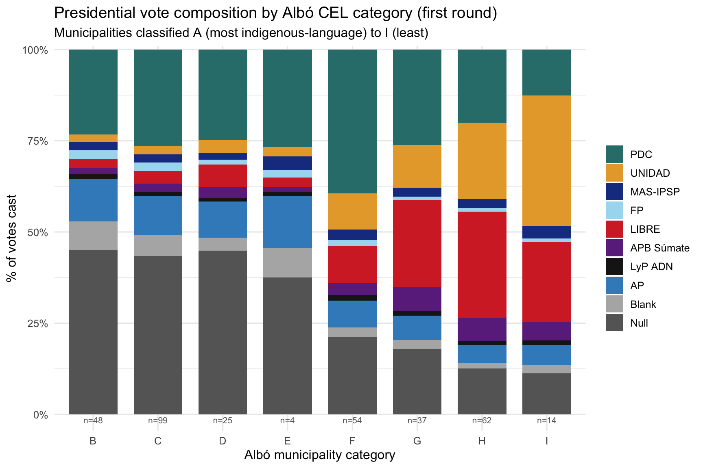
pres_2v <- elections_2v
pres2_dept <- aggregate_results(pres_2v, dept_code, dept_name,
parties = parties_2v)
pres2_dept |>
select(dept_name, mesas, registered, turnout_pct, null_pct,
all_of(paste0(parties_2v, "_pct"))) |>
mutate(across(where(is.numeric), ~ round(., 1))) |>
arrange(desc(registered))# A tibble: 9 × 7
dept_name mesas registered turnout_pct null_pct PDC_pct LIBRE_pct
<chr> <dbl> <dbl> <dbl> <dbl> <dbl> <dbl>
1 Santa Cruz 9115 2071967 86.2 3.6 38.5 61.5
2 La Paz 9099 2047825 90.2 4.8 66 34
3 Cochabamba 6346 1443013 87.1 5.7 61.3 38.7
4 Potosí 2377 487029 88.3 7.2 63.4 36.6
5 Tarija 1814 394539 84.6 4.3 49.7 50.3
6 Chuquisaca 1815 384825 83.8 5.2 53.7 46.3
7 Oruro 1693 363225 89.6 4.8 60.4 39.6
8 Beni 1373 296173 82.7 3.5 46 54
9 Pando 394 78611 81.6 3.3 54.8 45.2pres2_prov <- aggregate_results(
pres_2v,
dept_code, dept_name,
prov_code, prov_name,
parties = parties_2v
)pres2_mun <- aggregate_results(
pres_2v,
dept_code, dept_name,
prov_code, prov_name,
mun_code, mun_name,
parties = parties_2v
)
pres2_mun |>
select(dept_name, mun_name, valid_votes,
all_of(paste0(parties_2v, "_pct"))) |>
mutate(across(where(is.numeric), ~ round(., 1))) |>
arrange(desc(valid_votes)) |>
head(20)# A tibble: 20 × 5
dept_name mun_name valid_votes PDC_pct LIBRE_pct
<chr> <chr> <dbl> <dbl> <dbl>
1 Santa Cruz Santa Cruz de La Sierra 971029 30.3 69.7
2 La Paz El Alto 657544 71.7 28.3
3 La Paz Nuestra Señora de La Paz 565803 41.7 58.3
4 Cochabamba Cochabamba 456718 45 55
5 Oruro Oruro 209101 50.7 49.3
6 Chuquisaca Sucre 196077 41.8 58.2
7 Tarija Tarija 152820 41.8 58.2
8 Potosí Potosí 145843 40.4 59.6
9 Cochabamba Sacaba 129705 56.4 43.6
10 Cochabamba Quillacollo 104554 55.9 44.1
11 Santa Cruz Warnes 88615 45.6 54.4
12 Santa Cruz La Guardia 78727 45.6 54.4
13 Beni Trinidad 74955 35 65
14 Santa Cruz Montero 74380 46.7 53.3
15 La Paz Viacha 58153 80.5 19.5
16 Tarija Yacuiba 54378 54.9 45.1
17 Beni Riberalta 53399 48.1 51.9
18 Cochabamba Villa Tunari 48122 95.2 4.8
19 Santa Cruz Cotoca 47114 41.6 58.4
20 Cochabamba Tiquipaya 39251 49 51 choropleth_panel(pres2_dept, pres2_prov, pres2_mun,
parties_2v, "Presidential (second round)")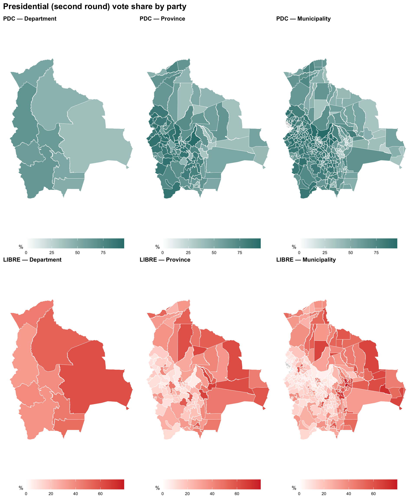
nulo2_dept <- pres2_dept |>
left_join(dept_to_gadm, by = "dept_code")
nulo2_prov <- pres2_prov |>
left_join(prov_to_gadm, by = c("dept_code", "prov_code"))
nulo2_mun <- pres2_mun |>
left_join(muni_to_gadm, by = c("dept_code", "prov_code", "mun_code"))
p_nulo2_dept <- make_choropleth(
gadm1, nulo2_dept,
c("NAME_1" = "dept_gadm"),
"null_pct", "Null vote % — Department", "#8B0000"
) + scale_fill_gradient(low = "white", high = "#8B0000", name = "%",
na.value = "grey85")
p_nulo2_prov <- make_choropleth(
gadm2, nulo2_prov,
c("NAME_1" = "dept_gadm", "NAME_2" = "province_gadm"),
"null_pct", "Null vote % — Province", "#8B0000"
) + scale_fill_gradient(low = "white", high = "#8B0000", name = "%",
na.value = "grey85")
p_nulo2_mun <- make_choropleth(
gadm3, nulo2_mun,
c("NAME_1" = "dept_gadm", "NAME_3" = "muni_gadm"),
"null_pct", "Null vote % — Municipality", "#8B0000"
) + scale_fill_gradient(low = "white", high = "#8B0000", name = "%",
na.value = "grey85")
p_nulo2_dept + p_nulo2_prov + p_nulo2_mun +
plot_layout(ncol = 3) +
plot_annotation(title = "Presidential null vote rate (second round)",
theme = theme(plot.title = element_text(face = "bold", size = 14)))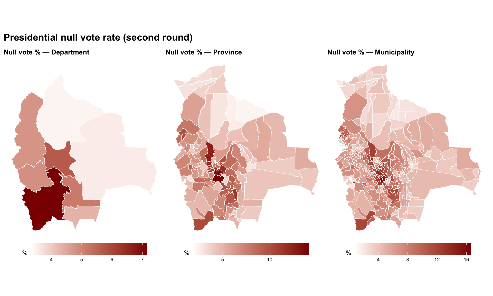
pres2_top30 <- pres2_mun |>
filter(mun_name %in% top30_oep) |>
filter(!(mun_name == "San Ignacio" & dept_code == 8))make_top30_chart(pres2_top30, group1_names, group1_display, group1_depts,
parties_2v, "Second round — Municipalities 1–15 (sorted by department)")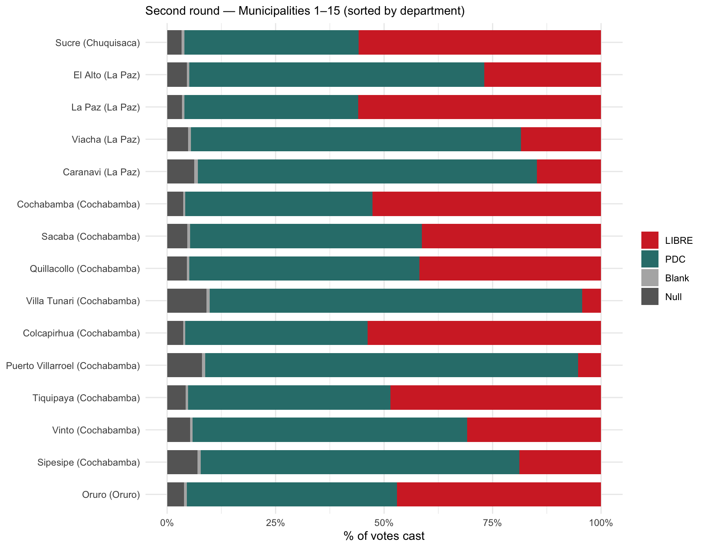
make_top30_chart(pres2_top30, group2_names, group2_display, group2_depts,
parties_2v, "Second round — Municipalities 16–30 (sorted by department)")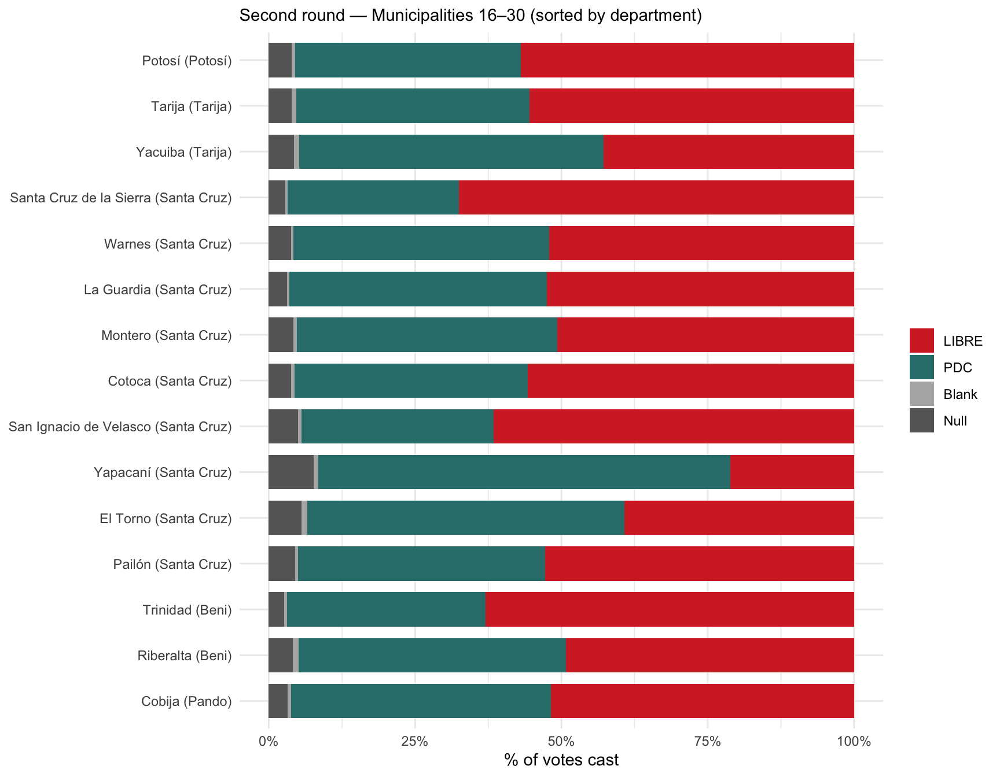
pres2_by_albo <- elections_2v |>
left_join(albo_groups |> select(department, province, municipality, albo_group),
by = c("dept_code" = "department",
"prov_code" = "province",
"mun_code" = "municipality")) |>
filter(!is.na(albo_group)) |>
group_by(albo_group) |>
summarise(
across(all_of(parties_2v), sum),
null_votes = sum(null_votes),
blank_votes = sum(blank_votes),
votes_cast = sum(votes_cast),
.groups = "drop"
)
pres2_albo_long <- pres2_by_albo |>
pivot_longer(cols = c(all_of(parties_2v), null_votes, blank_votes),
names_to = "category", values_to = "votes") |>
mutate(pct = votes / votes_cast * 100) |>
mutate(
category = recode(category, !!!party_labels,
null_votes = "Null", blank_votes = "Blank"),
category = factor(category,
levels = c(rev(party_labels[parties_2v]), "Blank", "Null"))
)
ggplot(pres2_albo_long, aes(x = albo_group, y = pct, fill = category)) +
geom_col(position = "stack", width = 0.75) +
geom_text(
data = n_munis,
aes(x = albo_group, y = -1.5, label = paste0("n=", n), fill = NULL),
size = 2.8, color = "grey40"
) +
scale_fill_manual(values = cat_colors, name = NULL) +
scale_y_continuous(labels = \(x) paste0(x, "%"), expand = expansion(add = c(3, 1))) +
labs(
x = "Albó municipality category",
y = "% of votes cast",
title = "Presidential vote composition by Albó CEL category (second round)",
subtitle = "Municipalities classified A (most indigenous-language) to I (least)"
) +
theme_minimal(base_size = 12) +
theme(legend.position = "right")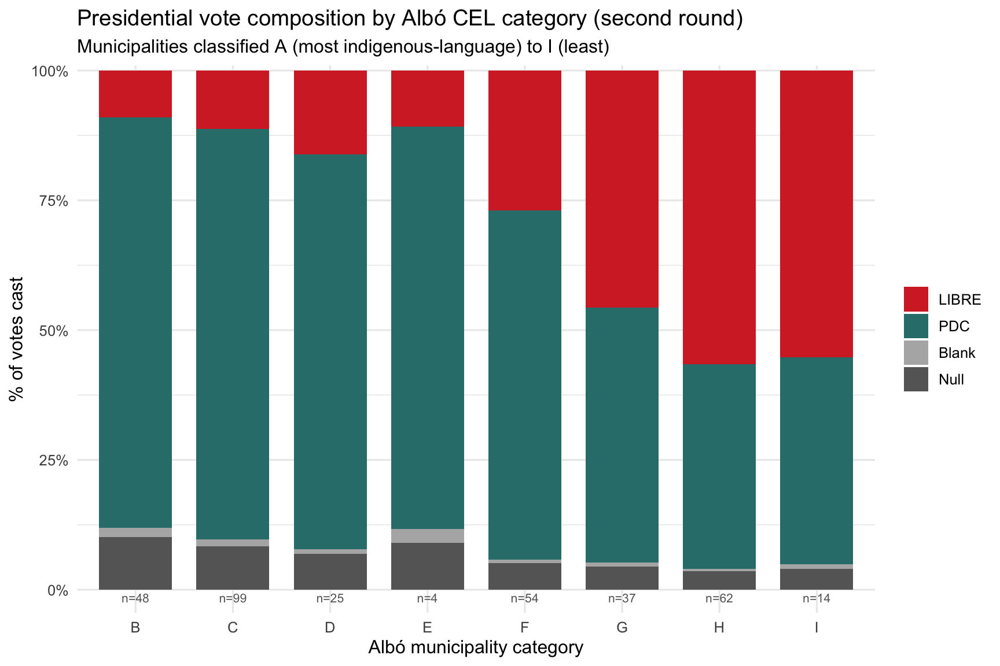